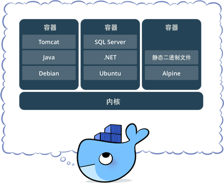
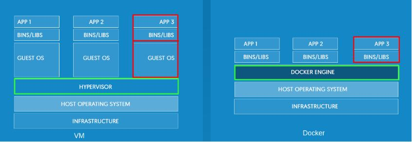
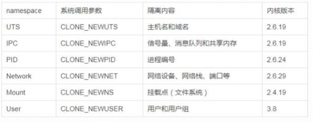
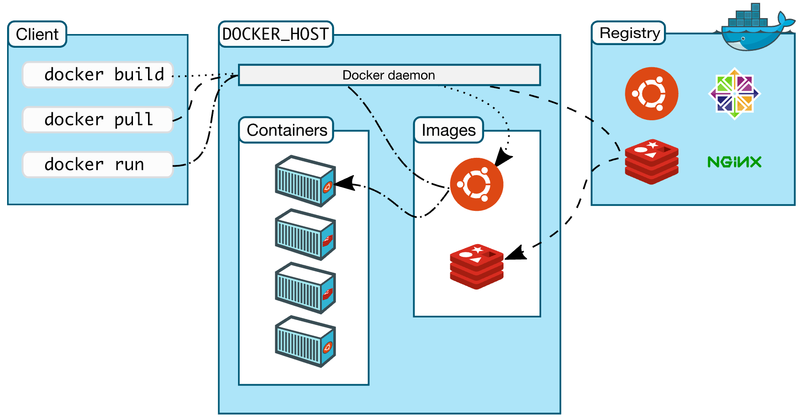
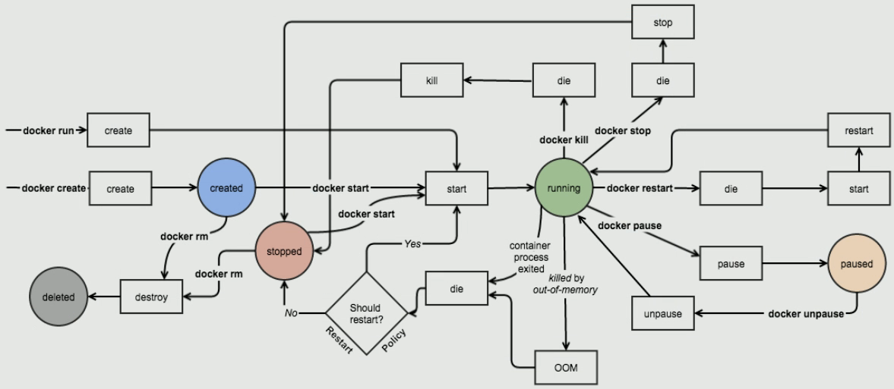

基本概念
容器
容器(Linux Containers)
是一个存放东西的地方，容器存放的东西可能更偏向于应用比如网站、程序甚至是系统环境。比如nginx，mysql，或者其他的服务器
是独立运行的一个（或一组）应用，以及它们必需的运行环境
是将软件打包成标准化单元，以用于开发、交付和部署
直接运行在操作系统内核之上的用户空间
容器技术可以让多个独立的用户空间运行在同一台宿主机上
可以运行在物理机也可以运行在虚拟机上，当然也可以运行在公有云主机上。
如果这个进程想要的话，我们就把这个容器启动起来，我们这个进程想把这个容器删掉

容器与虚拟化的区别?
虚拟化使得多个操作系统可同时运行在单个系统上
容器则可共享同一个操作系统的内核，将应用程序与系统其它部分隔离开

Docker
Docker是指容器化技术，是一个开源的引擎，可以轻松的为任何应用创建一个轻量级的、可移植的、自给自足的容器。开发者在笔记本上编译测试通过的容器可以批量地在生产环境中部署，包括VMs（虚拟机)、 bare metal、OpenStack 集群和其他的基础应用平台
Docker通常用于如下场景：
web应用的自动化打包和发布；
自动化测试和持续集成、发布；
在服务型环境中部署和调整数据库或其他的后台应用；
从头编译或者扩展现有的OpenShift或Cloud Foundry平台来搭建自己的PaaS环境
特点
Docker容器后台运行,就必须有一个前台进程
一个容器中只运行一个进程；镜像构建：分层构建，联合挂载
每个进程之间是隔离的
进程终止容器也可删除，容器有生命周期。与宿主机没有密切关联关系
Docker底层依赖的核心技术主要包括Linux操作系统的命名空间（Namespace）、控制组（Control Group）、联合文件系统（Union File System）和Linux网络虚拟化支持
命名空间

每个容器都可以拥有自己单独的命名空间
host主机的UTS、IPC、Network可以与容器可以进行共享
控制组(cgroup)
控制组主要用来对共享资源进行隔离、限制、审计等，只有能控制分配到容器的资源，才能避免多个容器同时运行时对宿主机系统的资源竞争
cgroup
blkio 这个子系统设置限制每个块设备的输入输出控制。例如:磁盘，光盘以及usb等等。
cpu 这个子系统使用调度程序为cgroup任务提供cpu的访问。
cpuacct 产生cgroup任务的cpu资源报告。
cpuset 如果是多核心的cpu，这个子系统会为cgroup任务分配单独的cpu和内存。
devices 允许或拒绝cgroup任务对设备的访问。
freezer 暂停和恢复cgroup任务。
memory 设置每个cgroup的内存限制以及产生内存资源报告。
net_cls 标记每个网络包以供cgroup方便使用。
ns 名称空间子系统。
perf_event 对cgroup中的任务进行统一性能测试
如：可以在/sys/fs/cgroup/cpu/docker/目录下看到对Docker组应用的各种限制值
联合文件系统(unionFS)
是一种轻量级的高性能分层文件系统，它支持将文件系统中的修改信息作为一次提交，并层层叠加，同时可以将不同目录挂载到同一个虚拟文件系统下，应用看到的是挂载的最终结果。
网络
每一个使用 docker run 启动的容器其实都具有单独的网络命名空间，Docker为我们提供了四种不同的网络模式，Host、Container、None 和 Bridge 模式。
架构
程序自身使用c/s架构，客户端向服务器发送请求，服务器负责构建、运行和分发容器。客户端和服务器可以运行在同一个Host上，使用远程API来管理和创建Docker容器与远程的服务器通信
Client <--> Daemon <--> Registry Server
Docker 容器：通过 Docker 镜像来创建，是 Docker 镜像的运行实例
DOCKER_HOST：真正运行容器的主机
Containers：容器，独立运行的一个或一组应用
Images：镜像，用于创建 Docker 容器的模板
Registry：镜像仓库

镜像image与容器Container区别：
镜像是静态的，不会运行
容器则是动态的，有生命周期

运行容器一个实例：
docker run -it --rm --name c1 busybox:latest /bin/sh
当运行这条指令后的执行流程步骤：
1.检查本地是否存在指定的镜像，不存在则从registry下载；
2.利用镜像启动容器
3.分配一个文件系统，并且在只读的镜像层之外挂载一个可读写层；
4.从宿主机配置的网桥接口桥接一个虚拟接口给此容器；
5.从地址池中分配一个地址给容器；
6.执行用户指定的应用程序；
7.程序执行完成后，容器即终止
注意：容器是为任务而生，任务完成即销毁，释放资源。为单一任务（进程）设计
运行的容器内部必须有一个工作前台的运行的进程；
docker的容器的通常也是仅为运行一个程序；
要想在容器内运行多个程序，一般需要提供一个管控程序，例如supervised
创建容器：
基于“镜像文件”，
镜像文件有默认要运行的程序；
安装docker
Docker 提供了两个版本：社区版 (CE) 和企业版 (EE)。
Docker社区版(CE)是开发人员和小型团队开始使用Docker并尝试使用基于容器的应用的理想之选。
DockerCE 有两个更新渠道，即 stable 和 edge
Stable 每个季度为您提供可靠更新
Edge 每个月为您提供新功能
依赖的基础环境
64 bits cpu
linux kernel 3.10+
linux kernel cgroups and namespaces
docker程序环境：
环境配置文件：
/etc/sysconfig/docker-network
/etc/sysconfig/docker-storage
/etc/sysconfig/docker
Unit File：
/usr/lib/systemd/system/docker.service
Docker Registry配置文件：
/etc/containers/registries.conf
docker-ce:
配置文件：/etc/docker/daemon.json
1.首先配置repo
wget -P /etc/yum.repos.d/ https://mirrors.aliyun.com/docker-ce/linux/centos/docker-ce.repo
yum-config-manager --add-repo https://download.docker.com/linux/centos/docker-ce.repo
2.镜像加速地址
多种加速方式
docker cn
阿里云加速器
中国科技大学
注册阿里云账号,专用加速器地址获得路径：
https://cr.console.aliyun.com/#/accelerator
由于国外网速较慢，下载镜像不方便
https://cr.console.aliyun.com/cn-hangzhou/mirrors
mkdir /etc/docker
tee /etc/docker/daemon.json <<EOF
{
"registry-mirrors": ["https://5k0xky51.mirror.aliyuncs.com","https://registry.docker-cn.com"]
}
EOF
3.安装
yum install docker-ce -y
systemctl daemon-reload
systemctl restart docker
systemctl enable docker.service
在安装docker的时候可能会遇到如下的问题
报错
Error: Package: 3:docker-ce-18.09.0-3.el7.x86_64 (docker-ce-stable)
Requires: container-selinux >= 2.9
原因：安装时依赖container-selinux安装包
解决办法：在yum仓库设置正确的 extra 源